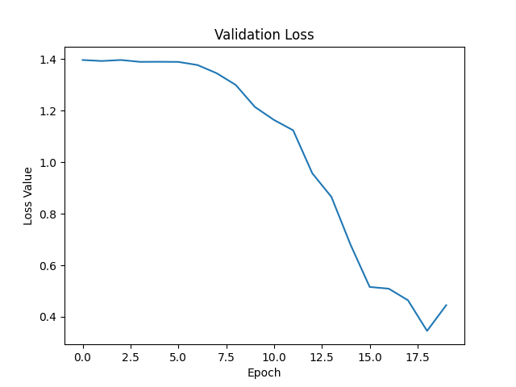

Michael Nasello
Welcome to my website! Here I share details about me, my work experience, and some of my projects.
About Me
I am an individual with a passion for learning. To me, nothing is more exciting than struggling
through a problem and finding that breakthrough solution. While studying Mechatronics Engineering
at the University of Waterloo, I have been presented with countless opportunities to do so.
Collaborations with classmates has led to my introduction into several interesting areas, including
Web Development, Computer Vision, and Machine Learning.
Outside of the classroom, I use my time to
develop skills in these areas. Machine Learning is a field in which I have spent a significant
amount of time. From watching video lectures, reading articles, and learning the mathematics behind
model training, I have become competent in the area and an active practitioner.
In my free time, I enjoy working out, running, and recreational play of golf, tennis, and soccer.
Work Experience
Deep Learning Developer
September 2020 - December 2020 Waterloo, ON
Employer Evaluation: EXCELLENTDuring my time at Applied Brain Research (ABR), I was a valued contributor to their newest product, NengoCloud: a cloud service for training power-conscious Keyword Spotters targeting various hardware backends.
My contributions to NengoCloud began with market research, forging a direction for the new product. I compiled a list of potential hardware candidates to support today’s popular Edge-AI devices. I completed additional market research, surveying popular cloud services for training Edge-AI models and extracting a list of common user-facing options for their clients. This research was condensed to a presentation I delivered to ABR leadership. My coding time was dedicated to one specific hardware target: the Coral TPU. This work started with sandboxing a compiler-compatible, feed-forward implementation of the RNN (to date, RNNs are not natively supported by the TPU compiler). Following the support for ABR’s powerful Legendre Memory Unit (LMU), my responsibilities included authoring initial drafts of host and device code that provide the functionality to compile LMU models and run on-device testing.
I built a comprehensive Command Line Interface (CLI), with nested commands, for running the full NengoCloud pipeline. I provided a proof-of-concept, training models on Google’s Speech Commands v2 dataset; achieving ~97% training validation accuracy and, after model quantization and compilation, ~95% on-device testing accuracy.
Machine Learning Developer, Data Scientist
January 2020 - April 2020 Ottawa, ON
Employer Evaluation: EXCELLENTDuring my time at the National Research Council (NRC), I worked on a project that uses Machine Learning to forecast sea ice presence in several large Canadian bodies of water. ML models incorporate ConvLSTMs and a custom SIF-Net RNN architecture. For input, they take bitmaps of several environmental conditions (e.g. precipitation, temperature, windspeed).
My contributions included adding to the existing model training pipeline and deploying final products to AWS. I conducted rigorous experimentation with model inputs and hyper-parameters to maximize performance. I wrote code for the deployment of the project to AWS; using Fargate, ice presence forecasts are generated each day and available for viewing on a static webpage that I developed.
I wrote a work term report, summarizing my contributions; this report is available via the link provided.
Machine Vision Support Engineer
April 2019 - August 2019 Windsor, ON
Employer Evaluation: EXCELLENTAs a Machine Vision Support Engineer at Vista, I was responsible for developing Machine Learning solutions for projects where traditional methods of Machine Vision could not perform at a level required by the client. I worked on several projects during my co-op. I spent a majority of my time carrying an Object Detection project to completion.
I was also responsible for training Vista Engineers and providing an introduction to Neural Networks. I delivered a webinar presentation that introduced the general structure of Neural Networks, the mathematics behind model training, and how these concepts can be implemented into their custom applications.
I on-boarded Vista Employees with my work, prior to my departure, and trained the incoming co-op student. I was requested for continual support related to Vista's Machine Learning projects.
Projects
Autonomous Mini Cart
The goal of this project is to build a Mini Cart, powered by a
Raspberry Pi,
that can take directions without direct human intervention. A camera is mounted
to the front of the cart chassis. Pictures are taken and processed through a
Machine Learning algorithm to extract instructions.
Instructions include: 'go left', 'go right', 'go forwards', 'stay'. After a proof
of concept is acquired, speed controls will be added. The user simply has to
point in the direction of travel and the Mini Cart responds appropriately.
More information on this project will be posted in the
Featured Work section of this page. To view the
source code, a GitHub link is provided.
Deployment of Sifnet ML Model
When working at the NRC, I was asked to develop a method by which end users could
access final products. Ice presence forecasts needed to be generated daily
and available for download. I pioneered and finished the complete deployment
pipeline of the project.
Using docker, I containerized the application and pushed
the image to AWS. I then leveraged the flexibility of
AWS Fargate;
scheduled tasks run daily and products are automatically uploaded to AWS s3. A
website was created to display products and validation graphs of our models.
Below you can access the website I created to view and download final products.

Reinforcement Learning with CartPole
The goal of this project is to stand the pole upright for as long as possible; a
traditional controls problem, but with the twist of using a Reinforcement Learning
approach. Through the use of OpenAI Gym's environment, I am given control of the cart.
The cart can move either left or right. My task is to determine, given a 4D vector
[Position, Velocity, Angle, Angular Velocity], the action that will maximize the
probability that the pole does not fall over, both in short and long term.
Below you can access my Github Repo and the documentation for OpenAI Gym.

Mechatronics Cornerstone Project
This was a first-year, first-term design project for all Mechatronics Engineering
students at the University of Waterloo. It was an open-ended project. We were given
a lego set and an EV3 controller. Monitoring and defending personal space was the task
we chose.
The final product surveyed an area and fired projectiles at approaching
objects. Chassis composed of lego; source code written in RobotC. During the closing
phase of the project, a final report was produced that summarized project scope,
constraints and criteria, mechanical and software design and methods of testing.
Featured Work
Autonomous Mini Cart
The Mini Cart is designed to follow directions without pre-programmed instructions. The end user can simply point in the desired direction of travel and the robot will react accordingly. Computer Vision and Machine Learning are used to determine intended commands from instructor.Raspberry Pi
The Mini Cart is powered by a Raspberry Pi; the Pi is responsible for all ML computations, capturing pictures via the Pi camera, and reacting by powering servo motors with GPIO (General Purpose Input Output) pins. A Python virtualenv was used to install and manage essential Python packages, including Tensorflow, Numpy, Pillow, RPi.GPIO and Picamera.
Chassis
The Mini Cart chassis holds the Pi, Pi-Camera, servo motors, wheels, two power banks, and a breadboard circuit supporting drive functionality. A custom camera mount was built and installed on the front of the mini cart.

Machine Learning
A simple CNN was implemented to generate predictions. One issue specific to this project was model size. It was impossible to load the original model (~400MB) into memory on the Raspberry Pi; this is a common problem for ML 'at the edge'. Several steps were taken to reduce the model size to ~2MB. The model was quantized to use float16 precision (from float32). The model was further compressed using Tensorflow Lite.
In addition, images from the dataset were resized to 256 by 256 images (from 512 by 512). This decreased the size of convolution layer outputs and number of parameters in dense layers later in the network. I created my own dataset, gathering approximately 400 images of myself pointing in various directions. There was a 80 / 20 percent split of training and validation images, respectively. On the validation set of 80 images, an eventual accuracy of 88% was achieved.
Below you can observe the progress of training.

Final Product
Problem
The goal of this project was to develop a policy the CartPole can follow so that it stands upright. At each time step, OpenAI Gym provides the cart's position, angle, velocity, and angular velocity. It is our job to use this information to determine what action should be taken that will maximize the probability that the CartPole remains standing upright. Possible actions are moving left or right.Approach
Reinforcement Learning was used to solve this problem. This concept is synonymous to positive/negative reinforcements in real life:
If a dog behaves, they receive a treat; if they misbehave, you put them in their cage. After time, the dog figures out what is considered good/bad behaviour based off of the consequences.
This approach can be used to our advantage when training AI. The reinforcement learning application consists of four entities:
- The environment (OpenAI Gym / Your house)
- The agent (CartPole / The dog)
- The action space (Move left or right / Behave or misbehave)
- The reward (Number / Give treat or put in cage)
The approach for solving this problem is the following: train the CartPole to take actions that maximize its reward.
How is the network trained?
For a given state, it is the network's job to output a vector of probabilities for taking each action in the action space. When training, we attempt to minimize the difference between that output and the action that maximizes rewards.
For example, if the CartPole is currently travelling to the left, it is preferable to reverse that movement and begin travelling to the right. Thus, a desired output from the model is [0, 1] ([Going left, Going right]). A network without training won't necessarily generate that output. The optimizer's job is to adjust the network so that the vector approaches [0, 1] when the CartPole is moving left.

So our loss function attempts to minimize that difference. How are rewards used?
We multiply our gradients by the rewards. When performing Back Propagation, positive rewards (agent did something right) will cause the optimizer to descend down the gradient. The opposite is true for negative rewards (agent did something wrong). This process has the effect of 'learning' what the appropriate actions to take are, given a state from the environment.
The Credit Assignment Problem
There is a fundamental problem with how rewards are calculated: how does the agent know if falling at t = 100 was caused by an action at t = 98 or t = 17? This is known as the 'Credit Assignment Problem'.
To solve this problem, we apply a discount rate to our rewards. For each time step:
Discounted Reward [t = t] = Reward [t = t] * pow(discount_rate, 0) + ... + Reward [t = t + n] * pow(discount_rate, n)
Note: discount_rate belongs to (0, 1)
What does this accomplish? This decreases the impact that a future reward has on the current time step. Using discounted rewards, the agent, over many games, is able to 'learn' what actions, given a corresponding input from the environment, are beneficial.
Model
The tf.keras API was leveraged for the formulation of models. Each model architecture developed consisted of a series of fully-connected layers. Dropout was used for the final design; this design performed the best during testing.
The final design, model_v5, consisted of the following:
Dense(32) → Dropout → Dense(32) → Dropout → Dense(32) → Dropout → Dense(32) → Dropout → Dense(32) → Dense(2) → SoftmaxResults
After 5 iterations of the model architecture, a policy model was trained that converged and was able to survive in the environment. The program was manually stopped at 15,000 steps (about 5 minutes). It took 900 episodes of training to reach this point. Below is a video showing the agent's progress throughout the training loop.
Acknowledgements
Three resources were used to help me as I learned about Reinforcement Learning:
- I was introduced to the idea while completing Jose Portilla's Complete Guide to TensorFlow for Deep Learning with Python course on Udemy.
- Much of the implementation for this project was inspired by this Medium post.
- This Medium post provided much of the necessary background and basis for this project.
Problem
The goal is to correctly classify a single handwritten digit given an arbitrary image. To test out the performance of my model, click on the link below.Approach
Machine Learning was used to solve this problem. Using the tf.keras API, a Convolutional
Neural Network was trained on the MNIST dataset. The following model architecture was
used.
Thanks to Google, I was able to train on a state-of-the-art TPU (Tensor Processing Unit)
through their free cloud service: Google Colab. On the MNIST dataset, I reached a
validation accuracy of approximately 99.2%.
It is important to note that the
numbers of the MNIST dataset are written in pen, while we are using an HTML
canvas to draw our numbers; this could slightly impact model performance.